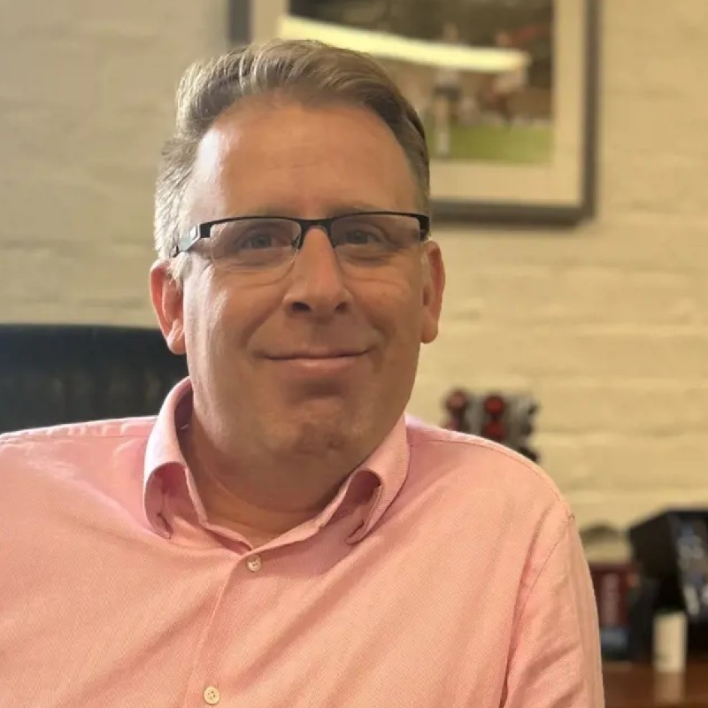

Technology and operations executive with experience spanning enterprise platform architecture, operational transformation, acquisition integration, telecom infrastructure delivery and automation-led efficiency.

Apogee growth supported
Acquisitions integrated
HP acquisition value
Tinder workforce
Technology and operations executive operating at the intersection of technology architecture, operational governance and commercial growth. Experienced working alongside CEOs and leadership teams to translate ambition into scalable operational structures.
Designed ERP, CRM and service platforms that created operational visibility, reduced manual friction and supported complex service delivery organisations as they scaled.
Integrated 14 acquired businesses into unified operational systems and operating models, combining technology alignment with hands-on stabilisation and culture support.
Embedded LLM workflows, document automation and operational data processing into live environments to improve control, knowledge access and delivery efficiency.
Paul joined Apogee when the business still relied heavily on manual workflows, spreadsheet-driven processes and basic legacy service tooling, but had strong ambition for national expansion and acquisition-led growth.
The challenge was not simply to improve IT, but to build the operational structure, controls and platforms that would allow the organisation to scale without losing visibility, pace or discipline.
The result was an integrated operating environment that gave the business stronger control, cleaner data, better reporting and the ability to scale nationally with confidence.
Tinder Corporation was founded to bring enterprise-grade IT strategy, technology capability and operating model discipline to the SME market. From day one, the aim was to create a business with stronger structure, better systems and clearer governance than most businesses of its size.
As the company evolved, it expanded beyond managed IT and telecoms into higher-stakes telecom infrastructure delivery, requiring a significant step-up in project control, compliance and reporting maturity.
The business developed into a structured, platform-led operation capable of delivering within demanding infrastructure environments while maintaining governance and operational control.
Establish a clear operating model, decision framework and accountability structure before introducing tools or technology.
Systems should remove friction from operations, improve flow and reduce manual effort rather than add complexity.
Leaders should be able to see what is happening in the business in near real time through reliable data and structured reporting.
Technology only works when teams understand the purpose, priorities and outcomes expected of them.
Organisations scale when leaders are willing to make difficult decisions quickly, calmly and clearly.
Use AI where it creates tangible operational advantage - knowledge access, document automation, workflow acceleration and decision support.
Understand the system
Create clarity and alignment
Drive early momentum
If you're dealing with operational complexity following growth, acquisitions, or technology fragmentation, I'm always happy to compare notes.